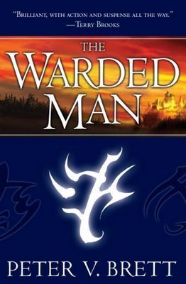

The Warded Man
- Read on 2018-07-23
- Rating: ️️️️️
- Format: 🎧 (18 hours 10 minutes)
An interesting fantasy novel that follows three different storylines of individuals as they grow and mature in a world inundated with "corelings" (demons of various types that come out at night), to which the people are seemingly defenseless. Technically not defenseless, but more offenseless. If their defenses (strategically drawn and placed glyphs) fail, there's nothing to stop the nighttime attackers, and death is guaranteed.
One downside to the book is the way the author writes about the male/female relationship, implying some sort of inferiority in many cases, and making an abnormal amount of men seem like out-of-control abusive sexual assailants. I fail to see how these add to the book in any way, so I wonder why they're there. -1 star.
Ignoring that, I really liked the altering viewpoints, and I searched for ways to link them together. Each of the main characters is interesting in their own way. I've already purchased the next book in the series, and will start it soon.
- Prior: We Are Legion
- Next: The Amazing Adventures of Kavalier & Clay